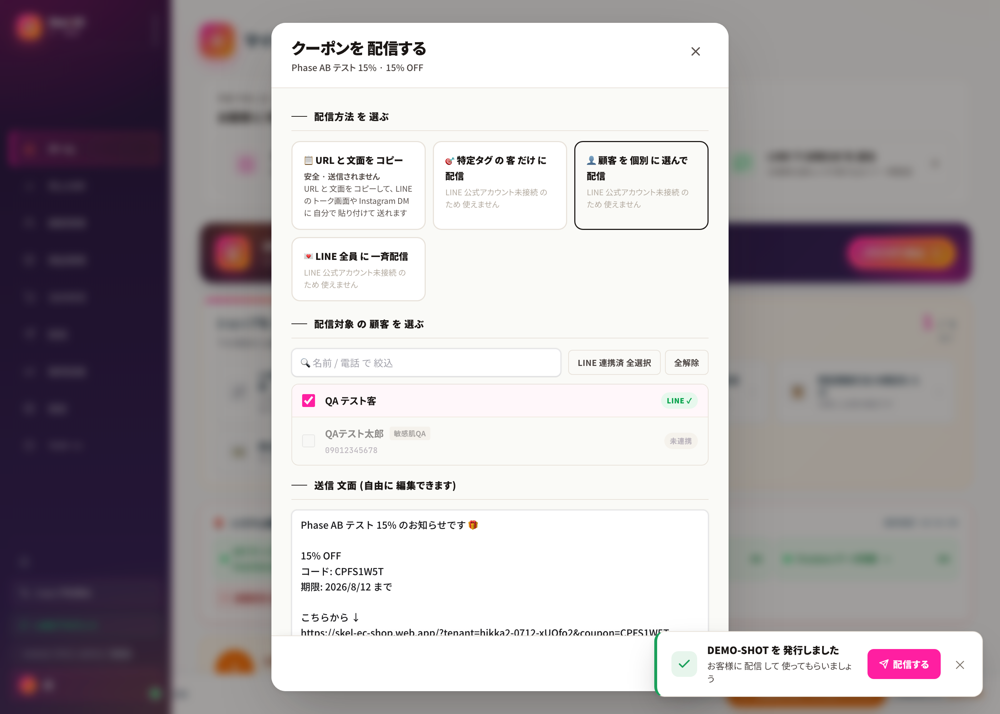
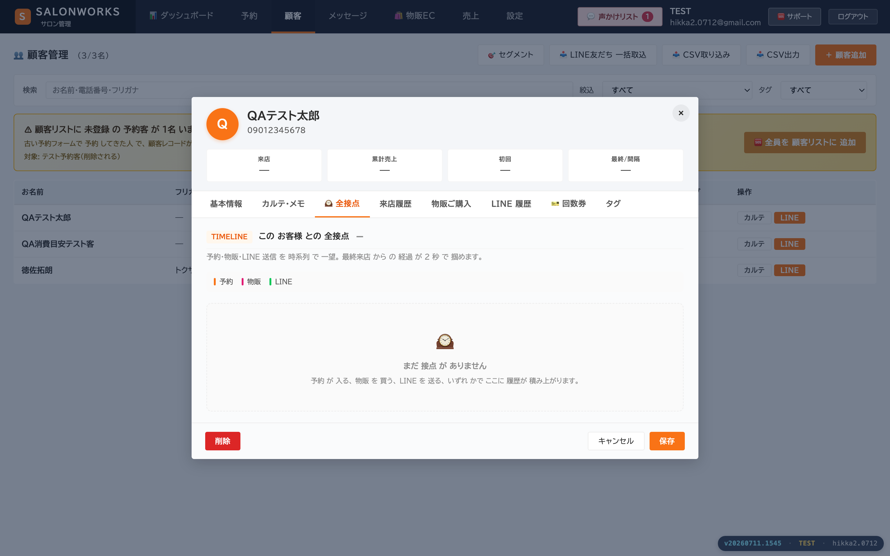

サロン経営、
こんな悩み
ない?
うんうん、あるある
ACT 01 · RETAIN
来てくれたお客さまが、
次、来なくなる。
一度掴んだお客様は、
二度と逃さない。
AIが来店間隔・購買履歴など4条件で、自動配信。

AI 自動配信
ACT 02 · CAPTURE
お客さまのこと、
全部覚えてますか?
お客様の全部を、
一人残らず
掴む。
LINEで統合カルテ。来店・購買・会話が1画面に。

統合カルテ
ACT 03 · LTV
お客様が離れてから
気づいても遅い。
お客様が離れる前に、
次を差す。
LTV 130〜150%
※導入実績ベース
。それが Salonworks。
LTV +30〜50%
※実績ベース
逃さず · 掴み · 離さない。
Salonworks
LINE 1本で、集客・予約・EC・カルテ・再来店
salonworks.jp